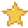
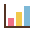

Bugün
24 Temmuz 2026, Perşembe

HedeflerimBugünkü hedefini belirle ve küçük adımlarla ilerle.
En Yakın Sınav
Sınavlarını ekle
Birden fazla sınavı hedefleriyle birlikte takip edebilirsin.
Ders hedefi henüz ayarlanmadı.
—
gün
—

Çalışma Süresi0 dkPomodoro0 oturum
Tamamlanan Görev0 / 0